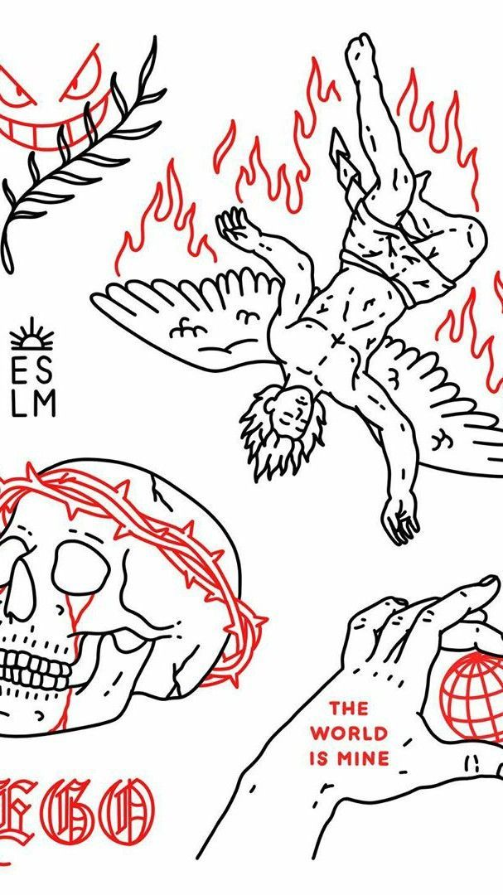

Blog: How to be happy
Autor: Amadeus Mozart

#happy
#funny
#car
#house
#dog
#cat
#money
#success
#willa
#space
Happiness what is it?
23.12.2003 13:44
Сча́стье — состояние человека, которое соответствует наибольшей внутренней удовлетворённости условиями своего бытия, полноте и осмысленности жизни, осуществлению своего человеческого призвания, самореализации.
Lo Mein
01.01.2004 15:25
Give me a huge bowl of lo mein and I will be the happiest person in the room. I haven’t eaten in a mall food court in ages, but when I did, I would always order the biggest container of lo mein. It could be beef or chicken lo mein, heck, it could be plain with only sauce. I’m just all about the noodles.
Chow Mein
18.02.2004 08:30
I love all carbs but I have to admit that noodles are my ultimate fave. I’m pretty sure that I can eat noodles all day, every day for the rest of my life and be perfectly happy. Especially if the noodle dishes included chow mein.
Take Out at Home: The Real Lo Mein Recipe
25.02.2004 07:00
Right now we’re in a lighthouse on the most Western point of Prince Edward Island – we slept here last night! It’s a dream come true because I, like most hardest of the hardcore Anne of Green Gables fans, have always wanted to visit PEI and so far it hasn’t disappointed. We spent the past couple of days driving around the island, staring at the gorgeous potato farms and stuffing ourselves with lobster.
Japanese Pancakes
05.03.2004 12:12
Сча́стье — состояние человека, которое соответствует наибольшей внутренней удовлетворённости условиями своего бытия, полноте и осмысленности жизни, осуществлению своего человеческого призвания, самореализации.